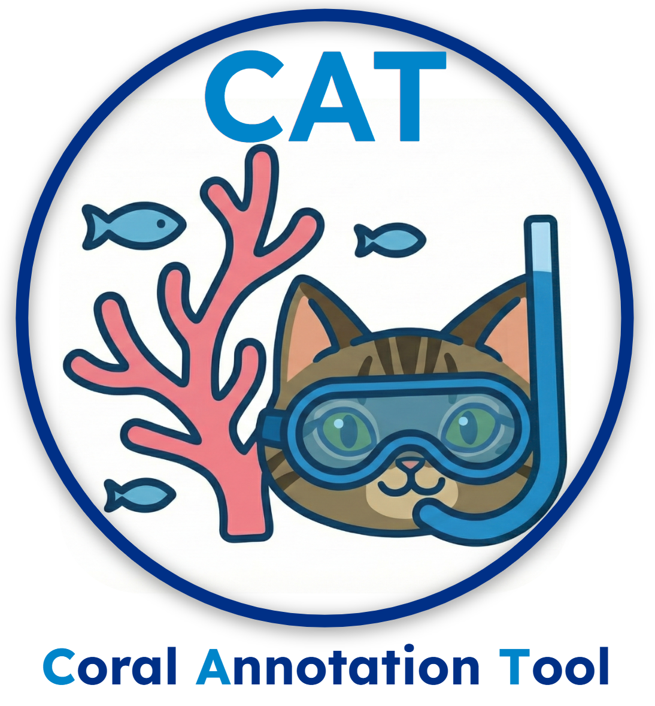

CAT (Coral Annotation Tool) is a lightweight, file-based annotation system for Structure-from-Motion orthomosaic workflows.

Project repo: https://github.com/MichaelAkridge-NOAA/cat
pip install coral-annotation-tool
Optional (desktop shortcuts):
pip install coral-annotation-tool[shortcuts]
cat-create-shortcuts
cat
Open:
http://localhost:8000
git clone https://github.com/MichaelAkridge-NOAA/cat
cd cat
pip install -e .
Optional source shortcuts:
pip install -e .[shortcuts]
cat-create-shortcuts
http://localhost:8000cat-convert, cat-batch-convert)